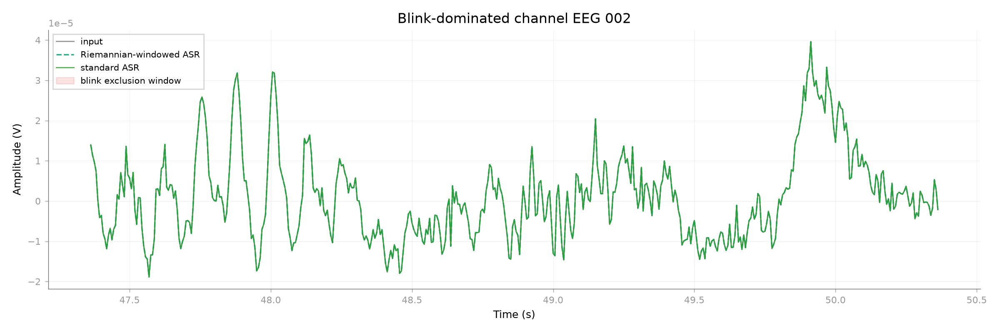

Note
Go to the end to download the full example code.
Riemannian ASR on blink-contaminated EEG#
Can a robust covariance geometry change the calibration of ASR on a real EEG
recording with eye blinks? This example compares standard ASR with the public
method="riemannian_windowed" backend on the MNE Sample dataset.
Blink coupling to an EOG channel is the artifact endpoint. Samples outside blink-centered exclusion windows provide a complementary preservation control: a small change there is reassuring, but it is not neural ground truth. The comparison illustrates the calibration difference on one recording; it is not a benchmark establishing global superiority of either backend. Samples outside the exclusion windows are a practical control, not a claim that the recording is perfectly artifact-free there.
The use case is motivated by the Riemannian ASR evaluation of [1] and the standard ASR evaluation of [2].
References#
Load real EEG with an EOG channel#
import mne
import numpy as np
from mne.preprocessing import find_eog_events
from mne_denoise.asr import ASR
from mne_denoise.qa import rms_change
from mne_denoise.viz import plot_signal_overlay
sample_path = mne.datasets.sample.data_path()
raw = mne.io.read_raw_fif(
sample_path / "MEG" / "sample" / "sample_audvis_raw.fif",
preload=False,
verbose="ERROR",
)
raw.pick(["eeg", "eog"], exclude="bads").crop(0.0, 60.0).load_data()
raw.resample(160.0, verbose="ERROR")
raw.set_eeg_reference("average", verbose="ERROR")
raw.filter(1.0, None, verbose="ERROR")
eeg = raw.get_data(picks="eeg")
eeg_picks = mne.pick_types(raw.info, eeg=True)
eeg_names = [raw.ch_names[index] for index in eeg_picks]
eog_channel = "EOG 061"
eog = raw.get_data(picks=eog_channel)[0]
# Use MNE's EOG detector to define a transparent preservation control. Each
# event excludes 250 ms before through 500 ms after the detected EOG peak.
eog_events = find_eog_events(raw, ch_name=eog_channel, verbose=False)
blink_mask = np.zeros(raw.n_times, dtype=bool)
pre = int(round(0.25 * raw.info["sfreq"]))
post = int(round(0.50 * raw.info["sfreq"]))
for event in eog_events:
sample = int(event[0] - raw.first_samp)
start = max(0, sample - pre)
stop = min(raw.n_times, sample + post)
blink_mask[start:stop] = True
quiet_mask = ~blink_mask
eog_coupling_before = np.abs(np.corrcoef(np.vstack([eeg, eog]))[:-1, -1])
top_channels = np.argsort(eog_coupling_before)[-8:]
blink_channel_index = int(np.argmax(eog_coupling_before))
blink_channel = eeg_names[blink_channel_index]
blink_sample = int(np.argmax(np.abs(eog)))
window_start = max(0.0, raw.times[blink_sample] - 1.0)
window_stop = min(raw.times[-1], raw.times[blink_sample] + 2.0)
print(f"Detected EOG events: {len(eog_events)}")
print(f"Good EEG channels: {len(eeg_names)}")
print(f"Quiet preservation control: {quiet_mask.mean():.1%} of samples")
print(
f"Blink-dominated channel: {blink_channel} "
f"(|r|={eog_coupling_before[blink_channel_index]:.3f})"
)
Attempting to create new mne-python configuration file:
/tmp/tmpmx587dxc/.mne/mne-python.json
Could not read the /tmp/tmpmx587dxc/.mne/mne-python.json json file during the writing. Assuming it is empty. Got: Expecting value: line 1 column 1 (char 0)
Reading 0 ... 36037 = 0.000 ... 60.000 secs...
Detected EOG events: 10
Good EEG channels: 59
Quiet preservation control: 87.5% of samples
Blink-dominated channel: EEG 002 (|r|=0.814)
Compare standard and Riemannian-windowed calibration#
standard = ASR(
cutoff=20.0,
method="standard",
picks="eeg",
verbose=False,
)
riemannian = ASR(
cutoff=20.0,
method="riemannian_windowed",
picks="eeg",
verbose=False,
)
# Keeping Raw objects here preserves the natural MNE workflow. Numerical
# arrays are extracted only when the metrics need them.
standard_clean = standard.fit_transform(raw.copy())
riemannian_clean = riemannian.fit_transform(raw.copy())
standard_eeg = standard_clean.get_data(picks="eeg")
riemannian_eeg = riemannian_clean.get_data(picks="eeg")
mean_eog_coupling_before = float(np.mean(eog_coupling_before[top_channels]))
standard_eog_coupling = np.abs(np.corrcoef(np.vstack([standard_eeg, eog]))[:-1, -1])
riemannian_eog_coupling = np.abs(np.corrcoef(np.vstack([riemannian_eeg, eog]))[:-1, -1])
mean_eog_coupling_standard = float(np.mean(standard_eog_coupling[top_channels]))
mean_eog_coupling_riemannian = float(np.mean(riemannian_eog_coupling[top_channels]))
quiet_scale = np.sqrt(np.mean(eeg[:, quiet_mask] ** 2))
quiet_change_standard = (
rms_change(
standard_eeg[:, quiet_mask],
eeg[:, quiet_mask],
)
/ quiet_scale
)
quiet_change_riemannian = (
rms_change(
riemannian_eeg[:, quiet_mask],
eeg[:, quiet_mask],
)
/ quiet_scale
)
print(f"Mean EOG coupling before ASR: {mean_eog_coupling_before:.3f}")
print(f"Mean EOG coupling after standard ASR: {mean_eog_coupling_standard:.3f}")
print(
"Mean EOG coupling after Riemannian-windowed ASR: "
f"{mean_eog_coupling_riemannian:.3f}"
)
print(f"Blink-free change, standard ASR: {quiet_change_standard:.3f}")
print(f"Blink-free change, Riemannian-windowed ASR: {quiet_change_riemannian:.3f}")
Mean EOG coupling before ASR: 0.654
Mean EOG coupling after standard ASR: 0.207
Mean EOG coupling after Riemannian-windowed ASR: 0.144
Blink-free change, standard ASR: 96377296051004.922
Blink-free change, Riemannian-windowed ASR: 90070806228432.016
Inspect the blink endpoint with the quiet control in mind#
plot_signal_overlay(
raw,
riemannian_clean,
raw.times,
pick=blink_channel,
start=window_start,
stop=window_stop,
scale_after=False,
before_label="input",
after_label="Riemannian-windowed ASR",
reference=standard_eeg[blink_channel_index],
reference_label="standard ASR",
highlight_mask=blink_mask,
highlight_label="blink exclusion window",
x_label="Time (s)",
y_label="Amplitude (V)",
title=f"Blink-dominated channel {blink_channel}",
show=False,
)

<Figure size 2400x800 with 1 Axes>
Total running time of the script: (0 minutes 5.598 seconds)